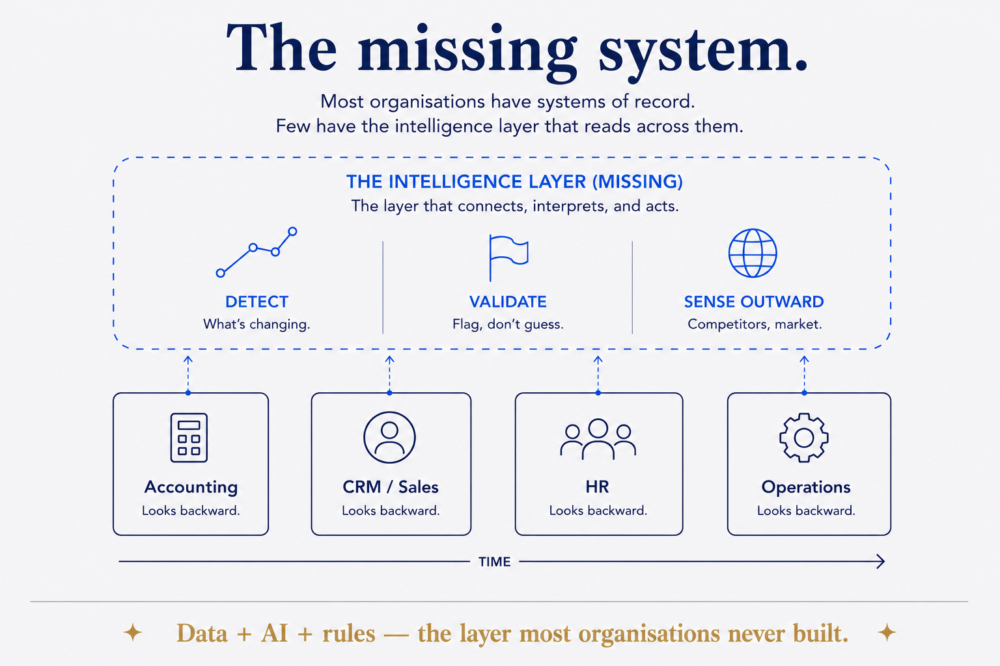

Orgs have systems of record; almost none have the intelligence layer on top — data + AI + rules.

Every organisation runs the obvious systems — accounting, CRM, HR, operations. All are systems of record: authoritative, transactional, backward-looking. The one almost nobody builds is the layer above them — a system of intelligence that reads across all the records, detects what's changing, validates its own data (flag, don't guess), and senses the world outside (competitors, market). Built from data + AI + rules; rules is the forgotten third. It's a layer, not another silo — its value is that it's cross-cutting. Missing systems are invisible precisely because nothing breaks; you just never surface the insight, report bad data straight-faced, and notice the competitor's move a quarter late.